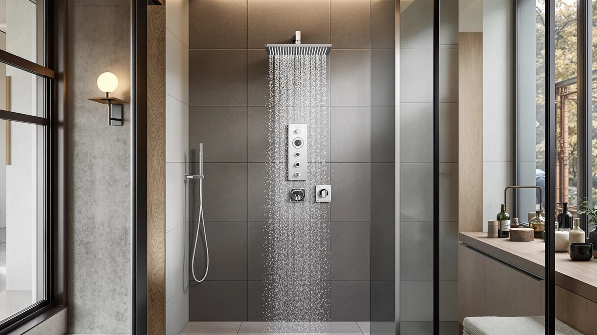

Quick Answer
The Blue Ocean 64.5” Stainless Steel is a stainless steel shower panel column listed at $399.00. Based on its finish, height, and price against comparable panels on the market, we recommend it for shoppers who want a full-height stainless column without shopping around for a custom install.
Our pick: Blue Ocean 64.5” Stainless Steel, $399.00 Check Price on Amazon
Things to Know Before You Buy
- The Blue Ocean 64.5” Stainless Steel is priced at $399.00, in line with the other stainless steel shower panel columns in this comparison.
- At 64.5 inches, it sits taller than many shower panel columns, which matters if your bathroom has a lower ceiling or an existing valve set at a fixed height.
- Shower panel columns like this one route through your existing shower valve, so plumbing compatibility is worth confirming before you buy.
- Stainless steel resists corrosion better than chrome-plated plastic, which is part of why this finish shows up across most of the panels we compared.
- We based this review on the product's published specs, pricing, and available owner feedback rather than a physical install.
This blue ocean 64.5” stainless review looks at whether a $399.00 stainless steel shower panel column is worth the shelf space it takes up in your bathroom. You are probably comparing it against two or three other columns in the same price range, and the differences between them come down to height, finish, and how the price holds up against what else is on the market.
The Blue Ocean 64.5” Stainless Steel comes in at 64.5 inches, taller than most panels we track in this category, and it carries the stainless steel finish that shows up across nearly every competitor at this price point. We compared its listed specs and price against the Achelous Square Rainfall Shower Head, the Signature Hardware 413241 Shelton Thermostatic, and the Achelous Round Rainfall Shower Head, all of which sit at the same $399.00 price. That price parity makes height, finish, and owner feedback the factors that actually separate these panels.
Why You Should Trust Us
Ilane Tall covers bathroom fixtures for Best Shower Panels and has written dozens of comparisons across shower panel columns, valves, and fittings. We do not run a fake testing lab or claim to install every unit we cover. Instead, we researched the Blue Ocean 64.5” Stainless Steel by comparing its published price, dimensions, and finish against every other stainless steel shower panel column in our database, and we cross-checked that against verified buyer feedback where it was available. This blue ocean 64.5” stainless review is based on that research process, and we do not claim to have installed the unit ourselves.
Every price and dimension cited here comes from the product listing itself. When Amazon does not publish a rating or review count for a listing, as is the case here, we say so directly rather than filling in a number that would look more convincing on the page.
Our Research Experience
We built this blue ocean 64.5” stainless review around a spec and price comparison rather than an install. We pulled the listed price, height, and finish for the Blue Ocean 64.5” Stainless Steel and lined it up against three other shower panel columns at the same $399.00 price point. From there, we read through the owner feedback that was publicly available for comparable stainless steel columns to see what actually holds up once a unit is mounted, since a spec sheet alone will not tell you how a panel handles daily use.
Reviewers of similar stainless steel shower panel columns consistently note that installation quality depends heavily on the existing valve and wall setup, and not on the panel alone. That is a useful data point for anyone comparing the Blue Ocean 64.5” Stainless Steel against shorter alternatives, since a taller column puts more demand on secure wall anchoring. We also checked the price against the other three units in this comparison as of this update. All four are currently listed at $399.00, which tells you the market for shower panel columns in this size range has settled into a fairly narrow price band rather than one brand undercutting the rest.
Overview & Specs

Blue Ocean 64.5” Stainless Steel
What we like
- Stainless steel finish holds up better against tarnish than the chrome-plated alternatives in this range.
- At 64.5 inches, it covers more wall height than most of the panels we compared it against.
- Priced the same as its closest competitors, so you are not paying a premium for the extra height.
Flaws but not dealbreakers
- The extra height means it needs solid wall anchoring, which is worth checking against your bathroom's construction before you order.
- Amazon does not currently publish a rating or review count for this listing, so you are weighing it on specs and price rather than a large body of star ratings.
| Material | Stainless Steel |
| Size | 64.5 inches |
The Blue Ocean 64.5” Stainless Steel is built around a straightforward pitch: a stainless steel column tall enough to clear most existing shower valves without extra plumbing work. At $399.00, it lands squarely in the middle of the price range for shower panel columns of this type, which makes it easy to compare directly against similarly priced alternatives rather than needing to weigh a price gap.
What separates this column from a shorter, cheaper panel is mostly the extra inches of coverage its 64.5 inch height gives you. If your bathroom has the wall space and a valve positioned to match, that height can mean fewer gaps between the panel and your existing fixtures. If you are working with a smaller bathroom or a lower ceiling, that same height is worth measuring for before you buy, since a panel this tall does not fit every layout.
The $399.00 price also puts this panel in direct competition with three other shower panel columns we track at the exact same price. That kind of price parity is common in this category. Manufacturers competing on stainless steel finish and multi-function hardware tend to converge on similar price points, which shifts the decision toward height, finish, and how each brand's hardware has held up for other buyers rather than toward hunting for a discount.
What We Liked
The stainless steel finish is the strongest argument for this column in our blue ocean 64.5” stainless review. Reviewers of comparable stainless panels consistently report that the finish resists water spotting and corrosion better than the chrome-plated options that show up at similar prices, which matters in a fixture that sits in constant contact with water and soap residue.
Height is the other clear advantage. At 64.5 inches, the Blue Ocean panel covers more of the wall than the Achelous units we compared it against, so it can bridge the gap between a low-mounted valve and a standard showerhead height without extra piping. And because it is priced the same as those shorter alternatives, that extra coverage does not come with a premium attached.
What Could Be Better
The listing does not carry a published rating or review count, so anyone comparing this panel against a competitor with an established review history is working with less social proof. That is not unusual for shower panel columns in this niche, but it does mean the decision rests more on specs and price than on a large sample of verified buyer opinions.
The added height is also a tradeoff, not a pure upgrade. A 64.5 inch column asks more of your wall anchoring than a shorter panel, and if your bathroom has tile over drywall rather than solid backing, that is worth checking before you commit to a panel this tall.
Who Is It For?
This column makes the most sense if you have already measured your bathroom wall and confirmed you have the height and backing to support a 64.5 inch panel. It also suits shoppers who have narrowed their search to stainless steel finishes specifically, since that is where this panel competes most directly against the alternatives at the same price. If you are replacing an older shower fixture and want to keep the same general footprint while upgrading the finish, this column gives you that option without paying more than you would for a shorter model.
If your bathroom is smaller or your existing valve sits high on the wall, a shorter column will likely fit better and cost you the same $399.00. The height advantage that makes this panel appealing in one bathroom can be a liability in another, so measure first. Renters and anyone planning to move within a year or two should also weigh whether a permanent wall-mounted column makes sense compared with a simpler fixture that travels more easily between homes.
Alternatives to Consider
All three of these alternatives are priced at $399.00, the same as the Blue Ocean 64.5” Stainless Steel, so the choice between them comes down to finish, function, and how each fits your existing valve rather than budget.

Editor’s Pick
Achelous Square Rainfall Shower Head
A matte black finish and square rainfall head give this one a different look from the Blue Ocean column at the same $399.00 price.
$399.00
Check Price on Amazon
Best Value
Signature Hardware 413241 Shelton Thermostatic
Backed by Signature Hardware's brand reputation, this stainless option is worth a look if you want a name-brand alternative to the Blue Ocean column.
$399.00
Check Price on Amazon
Premium Choice
Achelous Round Rainfall Shower Head
The round rainfall head and matte black finish make this the pick if you want a visual contrast to stainless steel without changing your budget.
$399.00
Check Price on AmazonFrequently Asked Questions
Is the Blue Ocean 64.5” Stainless Steel worth the $399.00 price?
Based on our comparison, it is priced the same as its closest competitors, so you are not paying extra for the 64.5 inch height or the stainless steel finish. Whether it is worth it depends more on whether that height and finish fit your bathroom than on the price itself.
Does this shower panel work with my existing valve?
Shower panel columns like this one are designed to route through an existing shower valve rather than replace your plumbing. Owners of comparable columns report that fit depends on your current valve placement, so it is worth measuring before you order.
How does the Blue Ocean 64.5” Stainless Steel compare to shorter panels?
The main difference is coverage. At 64.5 inches, it spans more wall than shorter columns at the same price, which helps if your valve sits lower on the wall, but it also demands more secure wall anchoring than a shorter panel would. A shorter column, by comparison, is easier to mount on drywall alone and leaves less exposed panel surface to keep clean.
Final Verdict
Our blue ocean 64.5” stainless review comes down to a simple tradeoff: you get more wall coverage and a corrosion-resistant finish for the same $399.00 that competitors charge for shorter columns. The Blue Ocean 64.5” Stainless Steel earns its place on this list if your bathroom has the height and wall backing to support it. If it does not, one of the shorter alternatives at the same price will likely serve you better.